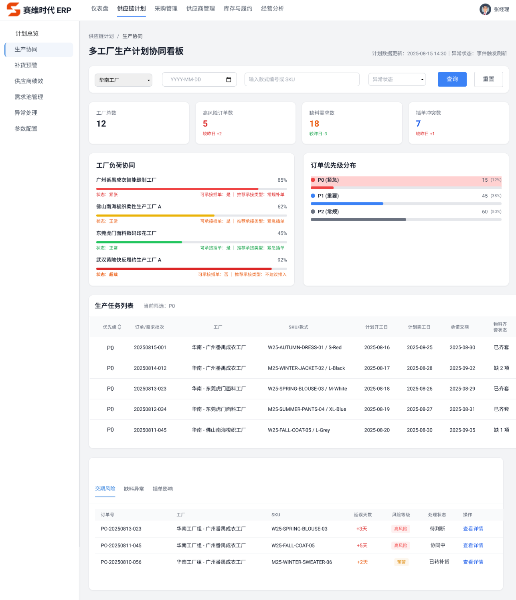
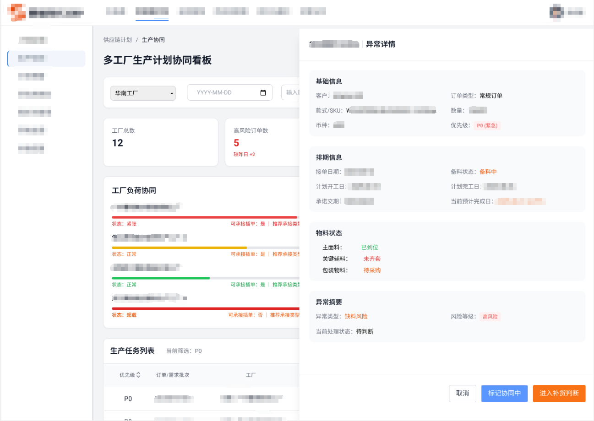
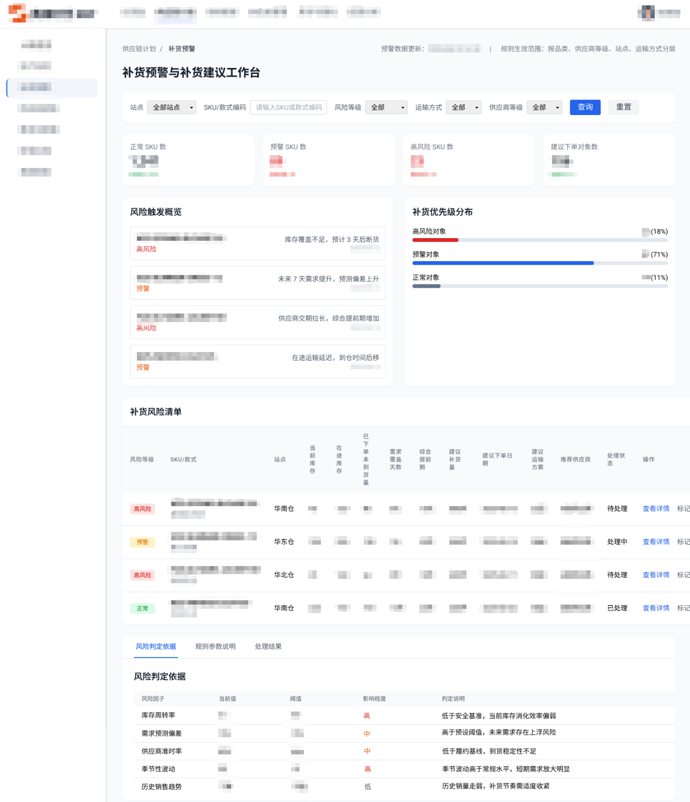
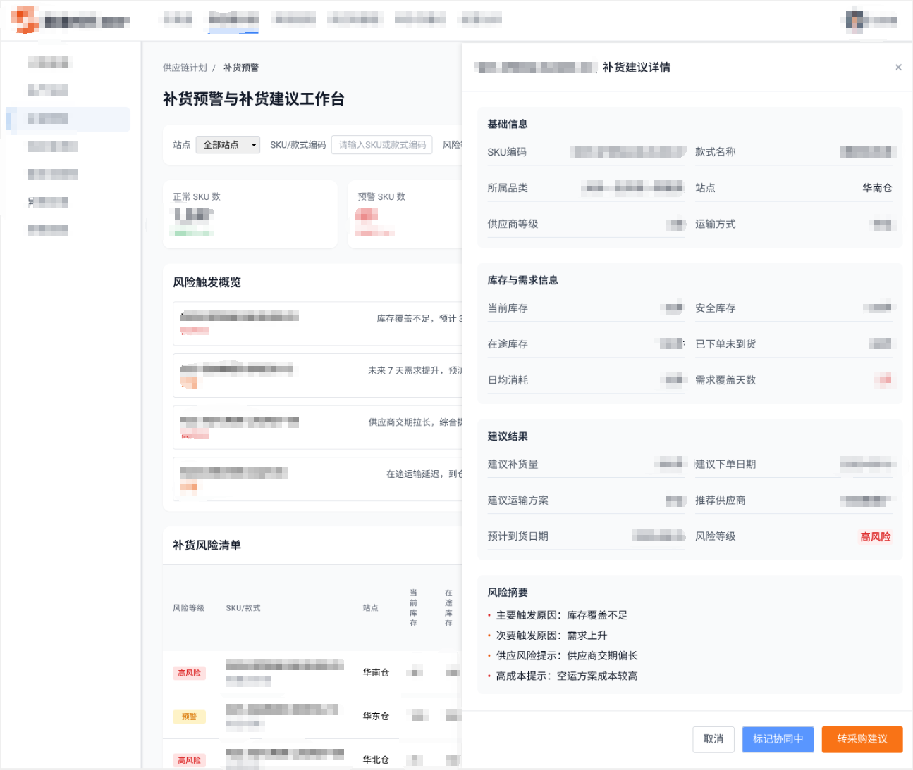
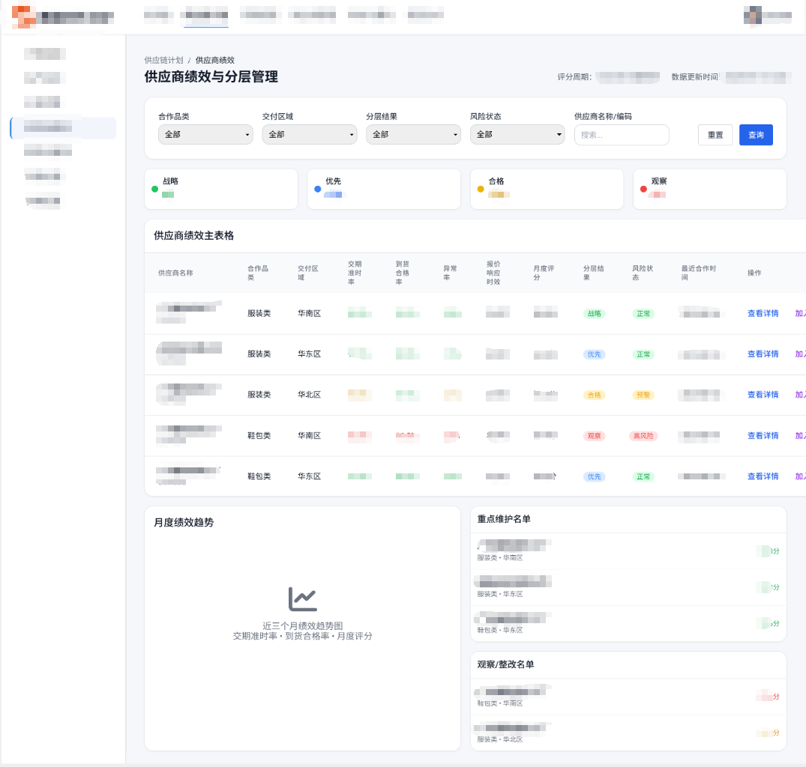
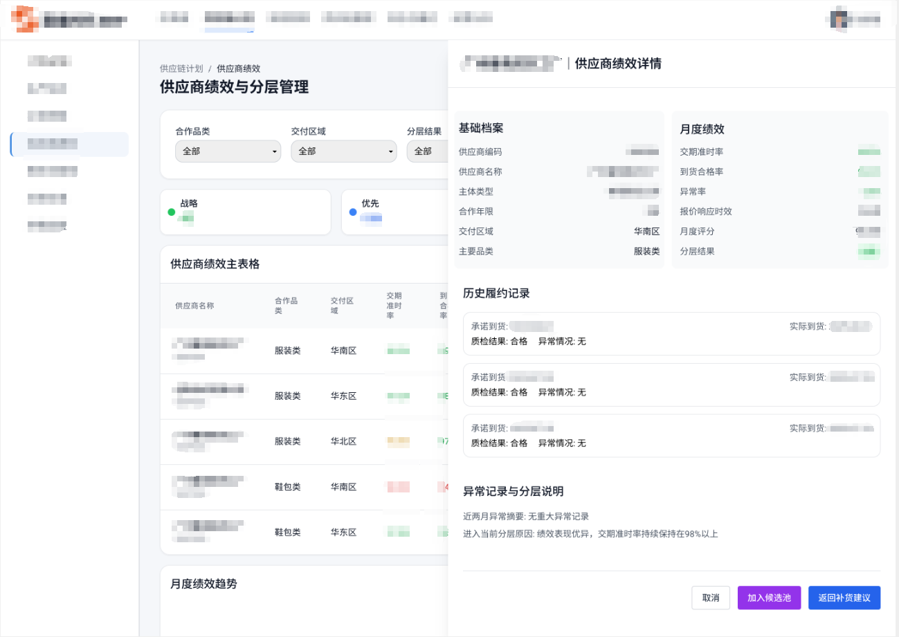
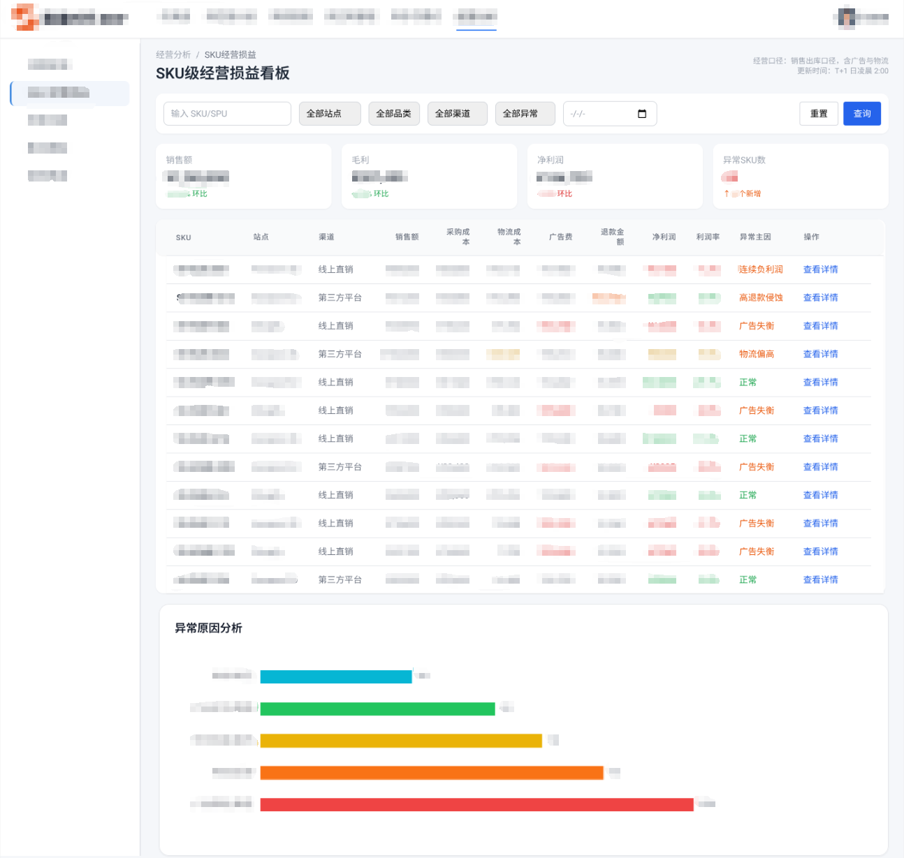
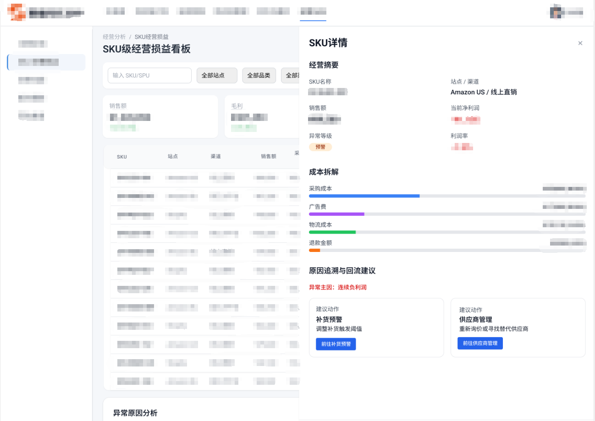

业务背景 / 问题背景
业务背景
赛维时代面向跨境服饰供应链，业务覆盖商品开发、采购、生产、库存、履约与多渠道销售。随着多平台、多区域、多品牌并行，中后台对计划透明度、补货判断与经营复盘的要求明显提升。
问题背景
原有 ERP 已具备基础交易处理能力，但在跨工厂协同、补货预警规则、供应商绩效沉淀和经营异常回流方面仍存在信息分散、规则不统一、判断滞后的问题。
CASE STUDY · 01
围绕计划协同、补货预警、供应商承接与经营回流四个关键节点，补齐 ERP 中后台判断链路，形成从异常识别到结果回流的供应链闭环。
核心结果 01
+42%
候选供应商筛选效率
核心结果 02
68%
补货建议采纳率
核心结果 03
61%
SKU 异常回流处理闭环率
BACKGROUND
业务背景 / 问题背景
业务背景
赛维时代面向跨境服饰供应链，业务覆盖商品开发、采购、生产、库存、履约与多渠道销售。随着多平台、多区域、多品牌并行，中后台对计划透明度、补货判断与经营复盘的要求明显提升。
问题背景
原有 ERP 已具备基础交易处理能力，但在跨工厂协同、补货预警规则、供应商绩效沉淀和经营异常回流方面仍存在信息分散、规则不统一、判断滞后的问题。
迭代目标
围绕“计划识别—补货判断—供应商承接—经营结果回流”主线，完成一次面向供应链中后台的闭环迭代，前置识别异常并沉淀可执行建议。
迭代主线
围绕“计划识别—补货判断—供应商承接—经营结果回流”主线，前置识别异常并沉淀可执行建议，逐步把分散处理动作收敛到统一页面体系中。
KEY ISSUES
问题 01｜计划协同断层
跨工厂排产与交期协同信息分散，异常识别依赖人工追踪，导致计划确认慢、插单响应慢、交期风险暴露滞后。
问题 02｜补货判断不准
原有预警逻辑偏静态，难以结合提前期、运输周期与需求覆盖天数判断真实补货窗口，容易出现断货或高成本加急。
问题 03｜供应商承接缺少依据
历史履约结果沉淀分散，采购在紧急补单场景下更依赖经验判断，缺少标准化候选承接依据。
问题 04｜经营结果难回流
经营结果颗粒度偏粗，难以下钻到 SKU 级定位异常来源，导致问题发现和回流偏慢。
SYSTEM MAP
最终原型统一为 4 个主页面，所有详情查看均通过本页右侧抽屉完成，页面之间形成“计划—补货—供应商—经营结果”的闭环。
01｜多工厂生产计划协同看板
统一查看计划状态与异常分布，作为整条链路的风险识别入口。
02｜补货预警与补货建议工作台
承接异常对象，结合库存、需求覆盖天数与综合提前期生成补货建议。
03｜供应商绩效与分层管理页
基于分层结果、风险状态与履约记录筛选候选承接供应商。
04｜SKU 级经营损益看板
按 SKU 维度复盘经营结果，并将异常回流至计划、补货或供应商环节。
项目流程图

KEY PAGES
解决问题：解决多工厂计划信息分散、跨工厂状态不透明、交期 / 缺料 / 插单异常识别滞后的问题。
页面作用：统一展示工厂负荷、订单优先级、计划排期、物料齐套状态与异常池，帮助计划员和供应链运营快速识别高风险对象，并触发后续补货判断。
抽屉作用：在同一链路内补充异常对象的基础信息、排期信息、物料状态与异常摘要，支持标记协同或进入补货判断。
计划协同原型
页面态

补货建议原型
页面态

解决问题：解决原有补货预警偏静态、补货时点判断不准、建议不可执行的问题。
页面作用：承接页面1识别出的异常对象，按 SKU 维度结合当前库存、在途、需求覆盖天数与综合提前期，输出建议补货量、建议下单日期、运输方案与推荐供应商。
抽屉作用：集中展示库存与需求、时效参数、建议结果与风险摘要，支撑补货建议确认与后续供应商联动。
解决问题：解决采购在补货场景下仍依赖经验判断供应商、历史履约结果难复用的问题。
页面作用：页面不作为独立 SRM 主数据页，而是补货场景下的承接对象筛选页。通过月度评分、分层结果、风险状态与履约记录，帮助采购筛选候选供应商，并将结果回传当前补货任务。
抽屉作用：提供只读核验视图，集中查看供应商档案、绩效摘要、履约记录与分层原因说明。
供应商分层原型
页面态

经营损益原型
页面态

解决问题：解决经营结果停留在粗颗粒度、难以下钻定位具体 SKU 异常来源的问题。
页面作用：作为结果检验层和异常复盘入口，按 SKU 维度展示收入、成本、利润与异常主因，并支持查看补货记录、供应商记录与计划异常。
抽屉作用：完成成本拆解、异常主因说明、回流建议与跨模块跳转，将经营问题反向指向计划、补货或供应商环节。
RULES & DOCUMENTS
01｜页面流转
页面1识别异常后进入页面2；页面2生成补货建议后联动页面3；页面3将候选供应商结果回传页面2；页面4识别经营异常后回流前链路。
02｜状态设计
覆盖异常状态、建议状态、分层状态与回流状态，支撑跨页面协同与处理结果回写。
03｜规则口径
补货页补充需求覆盖天数、综合提前期与建议生成逻辑；经营页补充异常识别与回流规则。
04｜页面边界
页面2不承担正式采购下单，页面3不作为独立 SRM 页，页面4不承担财务核算编辑。
OUTCOMES
31%
高风险计划异常识别时效提升
68%
补货建议采纳率
42%
候选供应商筛选效率提升
61%
SKU 异常回流处理闭环率
版本上线后，重点观察了计划异常识别、补货建议采纳、候选供应商筛选与异常回流处理 4 个指标。本次迭代主要改善了中后台在异常识别、建议承接与结果回流上的处理效率，也让原来分散在计划、补货、供应商与经营复盘中的动作被串到同一条链路里。
参与跨境服饰供应链全链路业务痛点梳理，收敛计划协同、补货预警、供应商承接、经营回流四大迭代模块；参与页面1、页面2的核心模块设计与规则梳理；独立搭建供应商绩效与分层管理体系；参与 SKU 级经营损益看板的异常归因与跨模块回流规则设计；全程跟进方案评审、开发协同、测试验收与上线复盘。
这次迭代让我更明确地理解了 ERP 中后台项目里“规则判断—页面承接—结果回流”的设计关系，也积累了从链路梳理、规则补充到原型校准与项目协同的完整经验。
作品及展示图片均已脱敏，企业内部敏感信息已做打码处理。